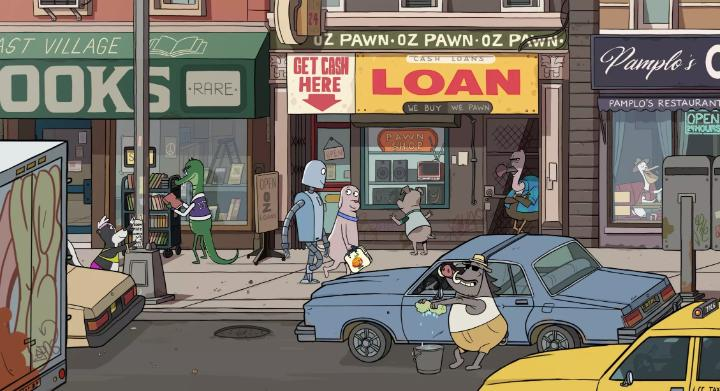

"Robot Dreams" was a surprise for me at the 2023 WIFF festival in Windsor, if only because animated films are rare for the multi-genre schedule. While I don't think it'll amaze many people, I left thinking it was nice and pleasant, and easy to give a modest recommendation.Set in an alternate world where anthropomorphic animals live and work in the city, the dialogue-less story follows Dog. He lives alone in his apartment, and is lonely. A late-night television ad shows that he can buy a robot companion. Cool! Dog eagerly orders one, and receives him in the mail. Robot needs a little help at first understanding societal cues, but before long, he and Dog are the best of friends, having fun every day at the park, on the train, at the beach... until Robot gets rusted and is unable to move from the beach at sundown. And the beach is closing for the season, not to open again until the following year. Without much choice, Dog reluctantly abandons Robot, and spends his days trying to get him back. Robot, unable to move, has multiple dreams of being rescued from the sand and the winter snow. The movie is sweet, well-suited for families of all ages, and is deceptively simple. Ultimately, it goes to some interesting territory as to whether Robot, a friend but also an appliance, could be effectively replaced, and how both parties feel about this. There's a beauty to the ending that's rare in any film genre. But it is also somewhat simple, and at 1 hour 40 minutes, the story dragged a little longer than it needed to. The "dreams" Robot has could have been creative in a number of ways, but they're fairly straightforward.The impressive thing is the production quality of "Robot Dreams," a digital production with a very clean cartoon style but with detailed life in the cityscape. It would look great in a comic book (on a related note, the movie is based on a graphic novel), but as smooth as the animation is... the simplicity of the designs make this feel like a television episode, only slightly better than "The Simpsons" or "Family Guy" in quality, and perhaps with bias because of a lack of crude humour. Music plays a strong part in the story in place of no dialogue, and a certain pop-song is a key aspect of it - like the visuals, it's good but simple. Interestingly, director Pablo Berger has made other films before, but this is his first animated feature.  "Robot Dreams" will probably go unnoticed by most film fans. That's a shame, since the ending is deeper than you'd normally get in a family film. Otherwise, the overall simplistic structure and style makes "nice" the best descriptor, without anything more impactful to help recommend it more strongly.
- "Ani" More reviews can be found at : https://2danicritic.github.io/ Previous review: review_Robot_Carnival Next review: review_Rock-a-Doodle